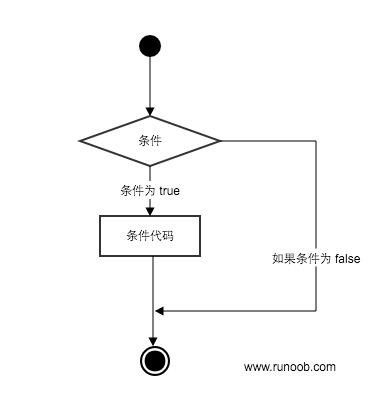
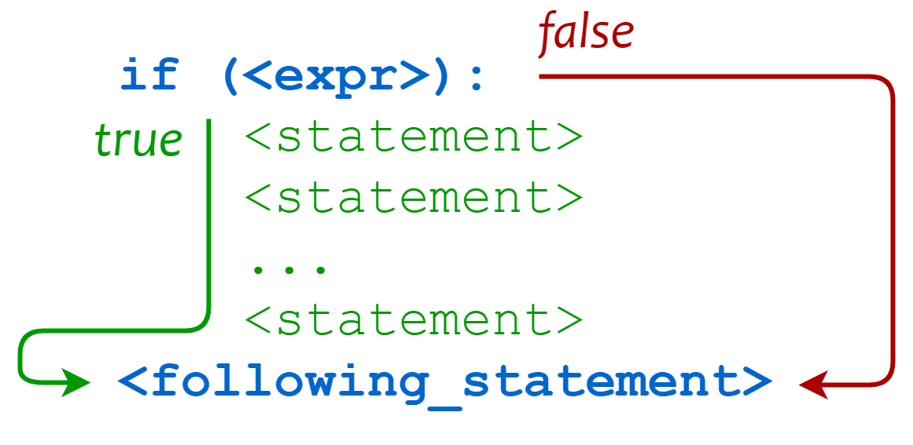
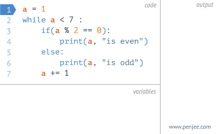

Python3 Conditional Control
Python conditional statements determine which code block to execute based on the execution result (True or False) of one or more statements.
The execution process of conditional statements can be briefly understood through the following diagram:

Code execution process:

Conditional Judgment Keywords
| Keyword / Function | Description | Example |
|---|---|---|
if |
Conditional judgment statement, executes the code block when the condition is True | if x > 0: |
elif |
Multi-condition judgment branch (else if) | elif x == 0: |
else |
Executed when all conditions are not satisfied | else: |
pass |
Empty statement, used as a placeholder to ensure complete syntax | if x > 0: pass |
match |
Structured pattern matching (Python 3.10+, similar to switch) | match x: case 1: ... |
if Statement
The general form of an if statement in Python is as follows:
- If "condition_1" is True, the "statement_block_1" block statement will be executed
- If "condition_1" is False, "condition_2" will be evaluated
- If "condition_2" is True, the "statement_block_2" block statement will be executed
- If "condition_2" is False, the "statement_block_3" block statement will be executed
In Python,elifis used instead ofelse if, so the keywords of the if statement are:if – elif – else。
Note:
- 1. A colon must be used after each condition:, indicating that the following is the statement block to be executed when the condition is met.
- 2. Use indentation to divide statement blocks. Statements with the same number of indents together form a statement block.
- 3. There is noswitch...casestatement in Python, but in version 3.10, thematch...casestatement was added, with similar functionality. See below for details.
Gif demo:

Example
The following is a simple if example:
Example
After executing the above code, the output is:
1 - if 表达式条件为 true 100 Good bye!
From the result, it can be seen that because variable var2 is 0, the statement inside the corresponding if was not executed.
The following example demonstrates the calculation and judgment of a dog's age:
Example
Save the above script in the dog.py file and execute the script:
$ python3 dog.py 请输入你家狗狗的年龄: 1 相当于 14 岁的人。 点击 enter 键退出
The following are commonly used operators in if:
| Operator | Description |
|---|---|
< |
Less than |
<= |
Less than or equal to |
> |
Greater than |
>= |
Greater than or equal to |
== |
Equal to, compares whether two values are equal |
!= |
Not equal to |
Example
The output of the above example:
False False
The high_low.py file demonstrates numeric comparison operations:
Example
After executing the above script, the example output is as follows:
$ python3 high_low.py 数字猜谜游戏! 请输入你猜的数字：1 猜的数字小了... 请输入你猜的数字：9 猜的数字大了... 请输入你猜的数字：7 恭喜，你猜对了！
if Nesting
In nested if statements, you can place an if...elif...else structure inside another if...elif...else structure.
if 表达式1:
语句
if 表达式2:
语句
elif 表达式3:
语句
else:
语句
elif 表达式4:
语句
else:
语句
Example
Save the above program to the test_if.py file. After execution, the output is:
$ python3 test.py 输入一个数字：6 你输入的数字可以整除 2 和 3
match...case
Python 3.10 added match...caseconditional judgment, so there is no need to use a series ofif-elseto judge anymore.
The object after match will be matched in turn with the content after case. If the match is successful, the matched expression is executed; otherwise, it is skipped directly._It can match anything.
SVG: match...case execution flowchartThe syntax format is as follows:
match subject:
case <pattern_1>:
<action_1>
case <pattern_2>:
<action_2>
case <pattern_3>:
<action_3>
case _:
<action_wildcard>case _:Similar todefault:in C and Java, when other cases cannot match, this one matches, ensuring that a match always succeeds.
Example
match status:
case 400:
return "Bad request"
case 404:
return "Not found"
case 418:
return "I'm a teapot"
case _:
return "Something's wrong with the internet"
print(http_error(400))
print(http_error(404))
print(http_error(418))
print(http_error(500))
The above is an example that outputs HTTP status codes. The output results for multiple status codes are:
Bad request Not found I'm a teapot Something's wrong with the internet
A case can also set multiple matching conditions, separated by|, for example:
...
case 401|403|404:
return "Not allowed"
SVG: | multi-condition matching diagram
Example
match status:
case 200:
return "OK - request successful"
case 301 | 302:
return "Redirect - redirection"
case 401 | 403 | 404:
return "Not allowed - no permission or not found"
case 500 | 502 | 503:
return "Server Error - server error"
case _:
return "Unknown status - unknown status code"
for code in [200, 301, 403, 500, 418]:
print(f"Status code {code}: {check_permission(code)}")
match...caseFor more content, refer to:Python match-case statement
Other extensions
Xiao Nai
734***009@qq.com
In the following example, x is a number from 0-99, y is a number from 0-199. If x>y, output x; if x equals y, output x+y; otherwise, output y.
#!/usr/bin/python3 import random x = random.choice(range(100)) y = random.choice(range(200)) if x > y: print('x:',x) elif x == y: print('x+y:', x + y) else: print('y:',y)Xiao Nai
734***009@qq.com
kein
201***63.com
#!/usr/bin/python3 """对上面例子的一个扩展""" print("=======欢迎进入狗狗年龄对比系统========") while True: try: age = int(input("请输入您家狗的年龄:")) print(" ") age = float(age) if age < 0: print("您在逗我？") elif age == 1: print("相当于人类14岁") break elif age == 2: print("相当于人类22岁") break else: human = 22 + (age - 2)*5 print("相当于人类：",human) break except ValueError: print("输入不合法，请输入有效年龄") ###退出提示 input("点击 enter 键退出")kein
201***63.com
A Ke
121***125@qq.com
Number guessing game optimization
print('二、数字猜谜游戏') print('数字猜谜游戏！') a = 1 i = 0 while a != 20: a = int (input ('请输入你猜的数字：')) i += 1 if a == 20: if i<3: print('真厉害，这么快就猜对了！') else : print('总算猜对了，恭喜恭喜！') elif a < 20: print('你猜的数字小了，不要灰心，继续努力！') else : print('你猜的数字大了，不要灰心，继续加油！')A Ke
121***125@qq.com
Xiao Ye
shi***0415@163.com
#!/usr/bin/python3 # 继续扩展，加入用户提示判断是否退出还是继续 print("=======欢迎进入狗狗年龄对比系统========") control = "N" while control=="N": try: age = int(input("请输入您家狗的年龄:")) #print(" ") age = float(age) if age < 0: print("您在逗我？") elif age == 1: print("相当于人类14岁") #break elif age == 2: print("相当于人类22岁") #break else: human = 22 + (age - 2)*5 print("相当于人类：",human) #break except ValueError: print("输入不合法，请输入有效年龄") print("") control = input("退出(Y/N)？") print("") ###退出提示 input("点击 enter 键退出")Xiao Ye
shi***0415@163.com
Mickey Mouse
468***534@qq.com
When the condition is false:0, false, '', None, for example:
When the condition is true:Not 0, True, 'None', String is not empty
Mickey Mouse
468***534@qq.com
JIECAO
shi***lingmail@vip.qq.com
Use judgment statements to implement BMI calculation.
BMI index (Body Mass Index), also known as body mass index, is calculated by dividing weight in kilograms by height in meters squared.
#!/usr/bin/env python3 print('----欢迎使用BMI计算程序----') name=input('请键入您的姓名:') height=eval(input('请键入您的身高(m):')) weight=eval(input('请键入您的体重(kg):')) gender=input('请键入你的性别(F/M)') BMI=float(float(weight)/(float(height)**2)) #公式 if BMI<=18.4: print('姓名:',name,'身体状态:偏瘦') elif BMI<=23.9: print('姓名:',name,'身体状态:正常') elif BMI<=27.9: print('姓名:',name,'身体状态:超重') elif BMI>=28: print('姓名:',name,'身体状态:肥胖') import time; #time模块 nowtime=(time.asctime(time.localtime(time.time()))) if gender=='F': print('感谢',name,'女士在',nowtime,'使用本程序,祝您身体健康!') if gender=='M': print('感谢',name,'先生在',nowtime,'使用本程序,祝您身体健康!')JIECAO
shi***lingmail@vip.qq.com
babeimi
xia***i3941@hotmail.com
Reference address
The following table lists the true and false cases of different numeric types:
babeimi
xia***i3941@hotmail.com
Reference address
Yuanlgone
183***68730@163.com
Two formats of if:
You can use parentheses to limit the code block, enhancing code readability.
name ="pag" if name == "pag": print(name=="pag") # True if (name == "pag"):{ print(name == "pag") # True }Yuanlgone
183***68730@163.com
Existence time
tsj***o@qq.com
Random number extension. Generate random numbers until two numbers are equal, and display the number of attempts.
import random x = random.choice(range(100)) y = random.choice(range(100)) b,c = x,y a = 1 print(x,y) while x != y: if x > y: print('x:',x) elif x == y: print('x+y:', x + y,'totall cal ',a,'times') else: print('y:',y) x = random.choice(range(100)) y = random.choice(range(100)) a = a+1 print('initialized data:',b,c,'x+y:', x + y,'total cal ',a,'times')Existence time
tsj***o@qq.com
Chuan Heyue
cit***ai@qq.com
Existence timeThe one above is too complicated, and the elif won't even be executed. Here's the optimization:
import random a = 0 while True: x = random.choice(range(100)) y = random.choice(range(100)) a = a+1 if x > y: print(x,'>',y) elif x < y: print(x,'<',y) else: print('x=y=', x, 'total cal ', a, 'times') breakChuan Heyue
cit***ai@qq.com
Hulu You
111***0177@qq.com
If the condition in an if statement is too long, you can use a line continuation character\to break the line.
For example:
if 2>1 and 3>2 and 4>3 and \ 5>4 and 6>5 and 7>6 and \ 8>7: print("OK")Note: \The following line has no indentation requirement; it can be indented at will, but to maintain code readability, we generally set the same indentation format.
Hulu You
111***0177@qq.com
Qiu | Xiansheng
mas***lipeng@163.com
Example:
# 查询 n 到 m 间的所有素数 def find_prime_number(n, m): if isinstance(n, int) and isinstance(m, int): if m <= 1: return "error range" if 1 >= n > m: return "error start" numbers = list() num = n while num <= m: i = 2 while i < num: if (num % i == 0) and (num != i): break else: i += 1 if num == i: numbers.append(num) num += 1 return numbers else: return "error input" print(find_prime_number(1, 100))Qiu | Xiansheng
mas***lipeng@163.com
My_Skity
719***459@qq.com
在 if...elif...elseOf the multiple statement blocks, only one will be executed, for example:
age = int(input("请输入你家狗狗的年龄: ")) print("") if age <= 0: print("你是在逗我吧!") elif 1 <= age <=2: #与下一个elif条件重复，只执行符合条件的第一个语句块 print("相当于 14 岁的人。") elif age == 2: print("相当于 22 岁的人。") elif age > 2: human = 22 + (age - 2) * 5 print("对应人类年龄: ", human)Therefore, when writing elif conditions, you must ensure they are mutually exclusive.
My_Skity
719***459@qq.com
Yangyang Han
wan***ngdh2015@126.com
Pattern Matching
match ... caseis a new feature introduced in Python 3.10, also known as "pattern matching" or "structured matching".
It brings more powerful and more readable branch control to Python compared to the traditionalif-elif-elsechain.
Basic pattern matching
x = 10 match x: case 10: print("x is 10") case 20: print("x is 20") case _: print("x is something else")Here,_is a special "placeholder" pattern used to match any value (similar to else).
Sequence pattern matching
point = (2, 3) match point: case (0, 0): print("Origin") case (0, y): print(f"Point is on the Y axis at {y}") case (x, 0): print(f"Point is on the X axis at {x}") case (x, y): print(f"Point is at ({x}, {y})") case _: print("Not a point")Object pattern matching
class Point: def __init__(self, x, y): self.x = x self.y = y p = Point(0, 3) match p: case Point(x=0, y=y): print(f"Point is on the Y axis at {y}") case Point(x=x, y=0): print(f"Point is on the X axis at {x}") case Point(x, y): print(f"Point is at ({x}, {y})") case _: print("Not a point")OR pattern
Use | to represent one or more patterns.
x = 2 match x: case 1 | 2 | 3: print("x is 1, 2, or 3") case _: print("x is something else")Guard
You can use if to add additional conditions in pattern matching.
x = 10 match x: case x if x > 5: print("x is greater than 5") case _: print("x is 5 or less")Yangyang Han
wan***ngdh2015@126.com